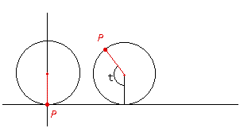
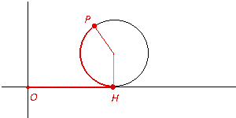

Cycloids
Problem

A wheel of radius r rolls along a horizontal line without slipping. Find
parametric equations for the path traced by a point P on the wheels edge.
Applet 1

If you don't understand the "arc PH = OH", the applet-2
( bellow ) will help you.
Applet 2